땡큐와인이 소개하고 판매한 와인
지금 매장에 있는 와인 100종, 주문해서 받아 드릴 수 있는 와인 110종, 지금까지 소개하고 판매한 와인까지 모두 343종이에요. 가격은 수입사 사정과 입고 시기에 따라 자주 바뀌어서 적지 않았어요. 궁금한 와인은 가격 문의를 눌러 카톡이나 문자로 이름만 보내 주세요. 다 나간 와인도 다시 구해 드릴 수 있는지 알아봐 드려요.
뭘 골라야 할지 모르겠다면
세 가지만 눌러 주세요. 지금 매장에 있는 와인 중에서 세 병을 골라 드려요.
맛과 음식 궁합을 기준으로 고른 참고용 추천이에요. 예산이나 받는 분 취향을 알려 주시면 더 잘 맞춰 드려요.
343종
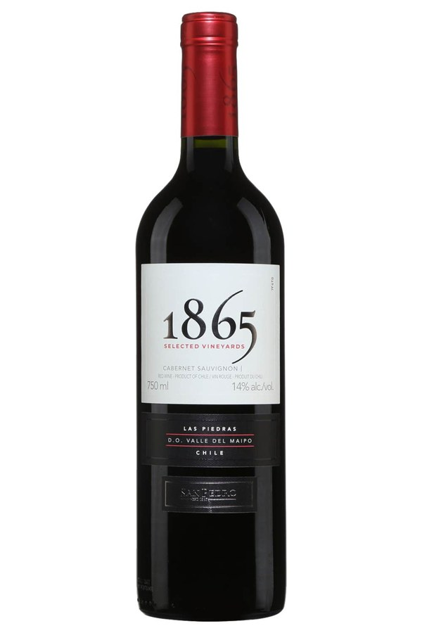
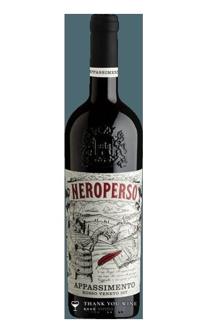
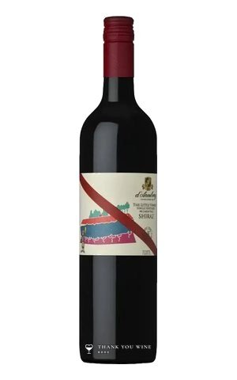
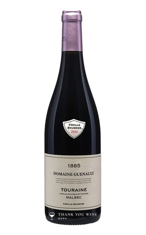
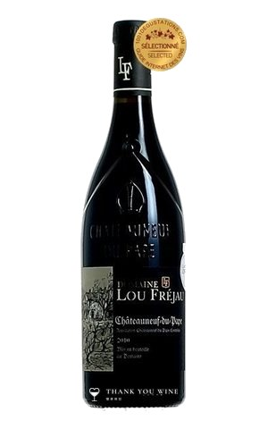
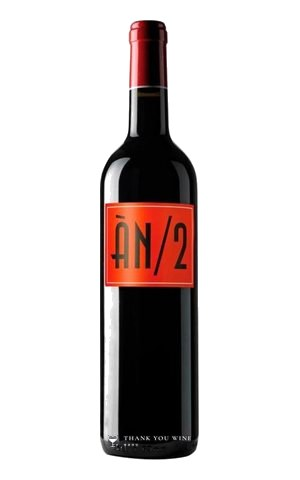
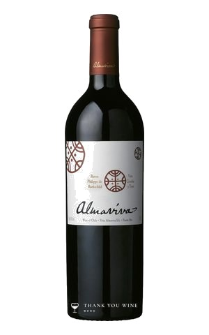
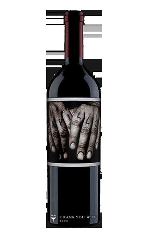
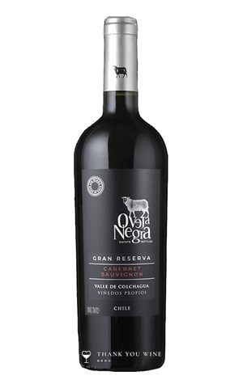
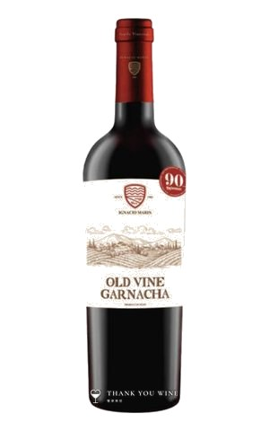
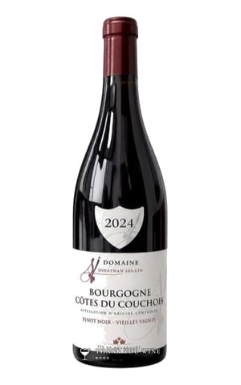
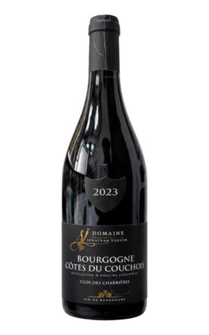
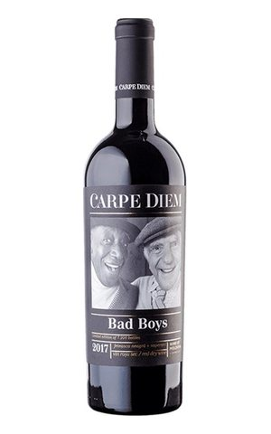
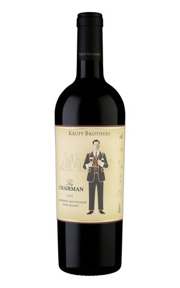
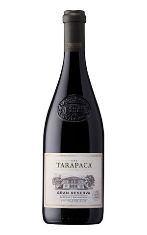
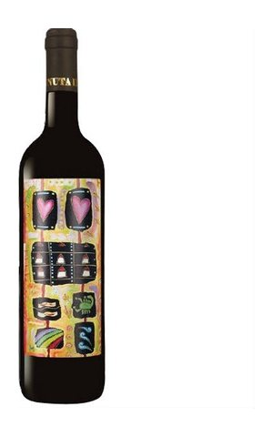
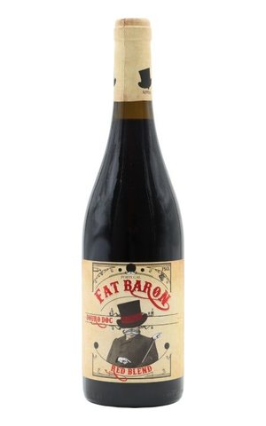
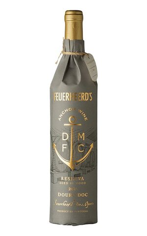
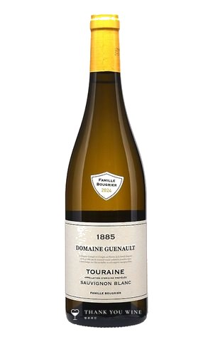
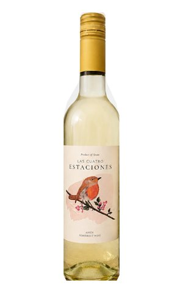
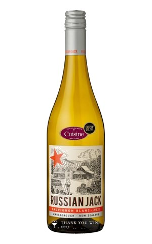
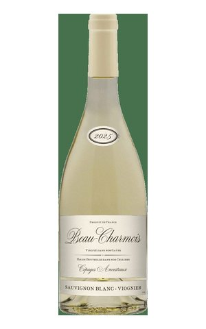
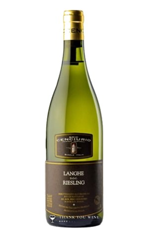
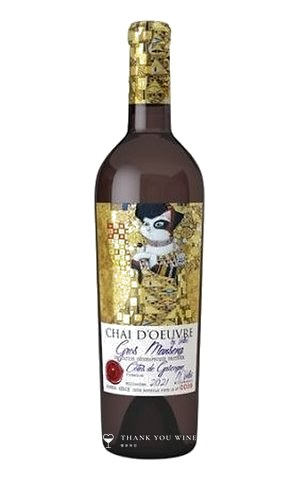
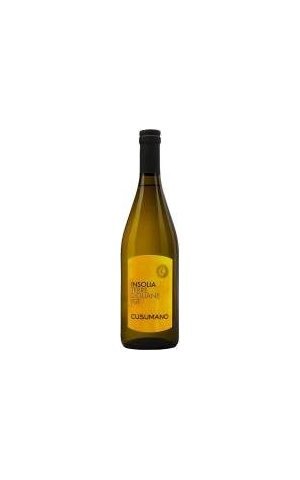
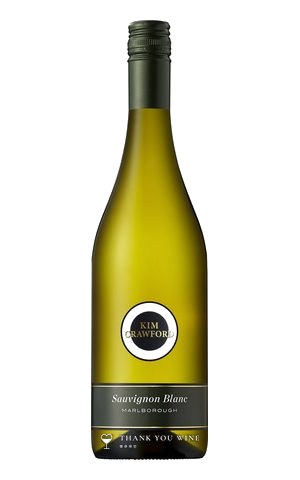
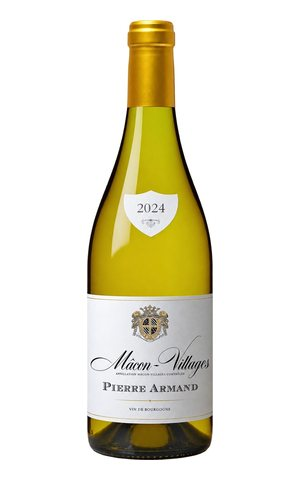
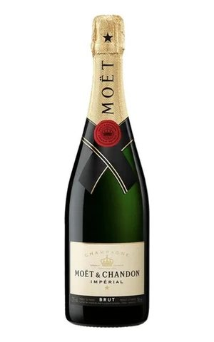
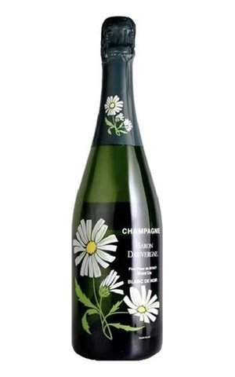
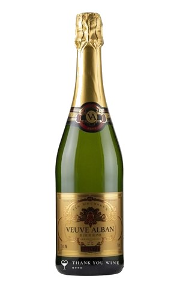
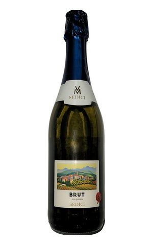
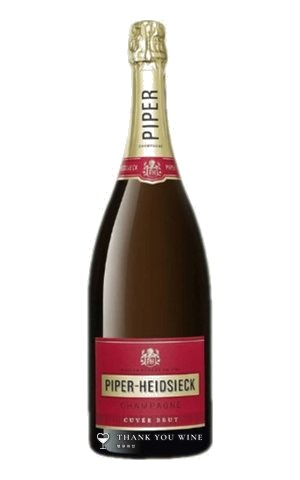
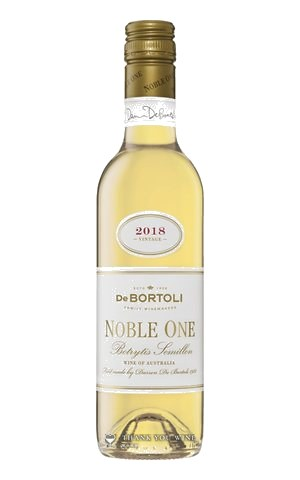
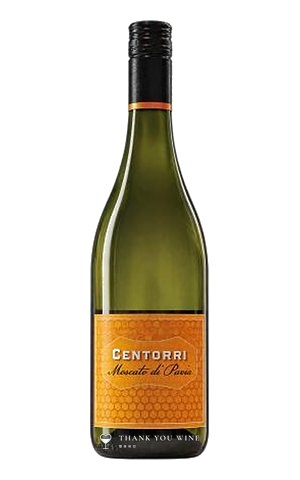
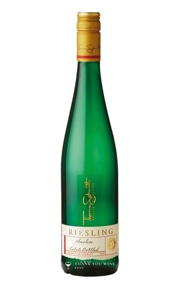
- 화이트지금 매장에
쾰러 루프레히트 칼슈타터 자우마겐 리슬링 카비네트 트로켄
Koehler-Ruprecht Kallstadter Saumagen Riesling Kabinett Trocken
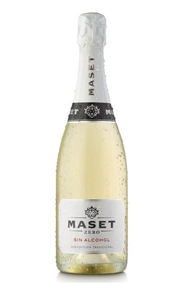
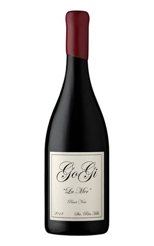
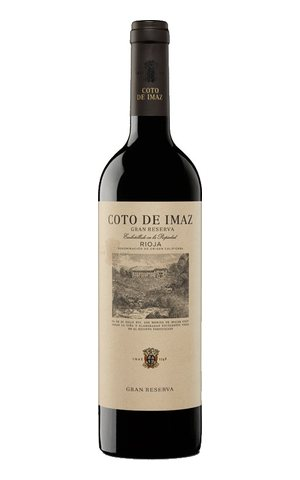
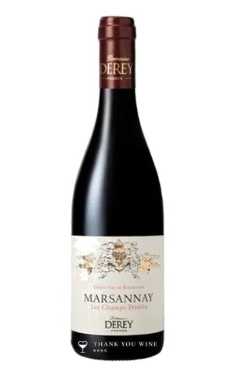
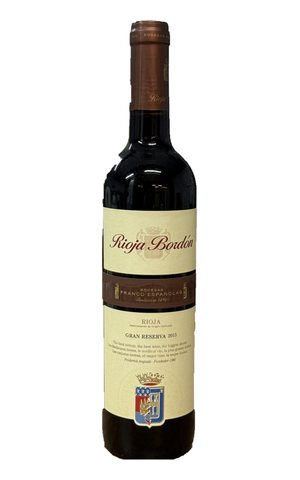
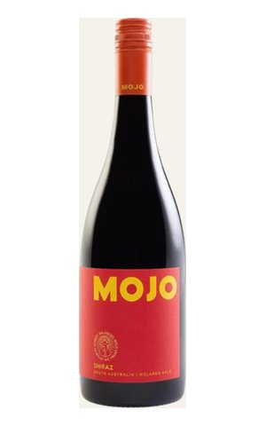
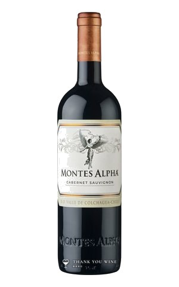
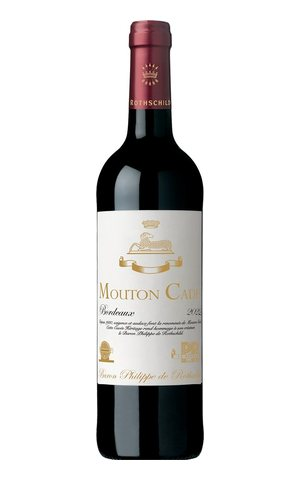
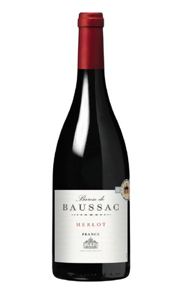
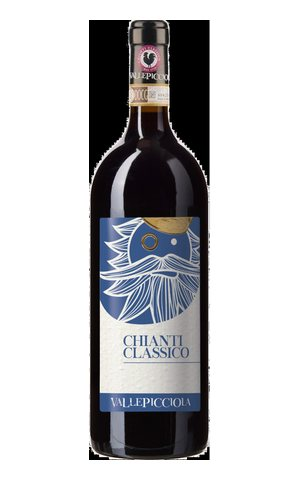
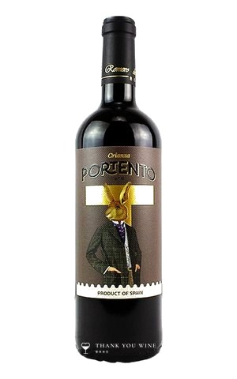
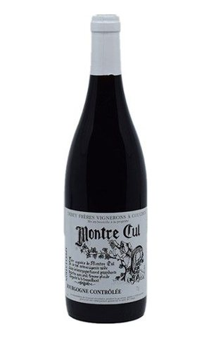
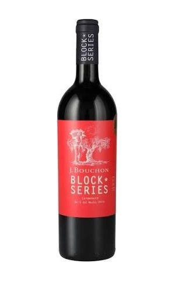
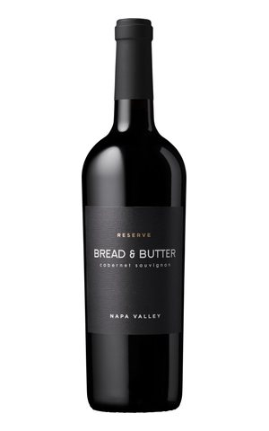
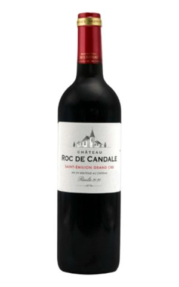
찾는 와인이 목록에 없어도 구해 드릴 수 있어요. 카톡으로 물어보기 →
'지금 매장에'는 매장 재고 기준이라 그사이 다 나갔을 수 있어요. 가져가시기 전에 카톡으로 한 번 확인해 주세요.